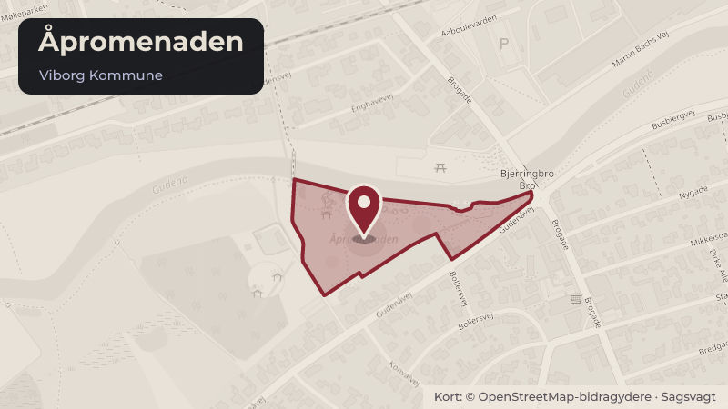

På dagsordenen 11. november, Byrådet, Viborg
Anlægsudgiftsbevilling Åpromenadens legeplads (Bevillingssag)
Klima og grøntBudget og økonomi

Kort fortalt
- Forslaget
- Anlægsudgiftsbevillingen til kontoen ”Åpromenaden i Bjerringbro” forhøjes med
- Anlægsindtægtsbevillingen til kontoen ”Åpromenaden i Bjerringbro” forhøjes med
- Hvem
- Byrådet, Viborg Kommune
- Hvornår
- Onsdag 11. november 2026
- Status
- På dagsordenen. Sagen behandles på mødet.
Er noget forkert her? Skriv til os
Hvad kan du gøre?
- Sid med til mødet
- Byrådets møder er offentlige, så du kan selv sidde med, når sagen behandles onsdag 11. november 2026.
Læs hele sagen Kommunens egen tekst
Indstilling
Direktøren for Teknik & Miljø foreslår, at Teknisk Udvalg indstiller til byrådet,
1. at anlægsudgiftsbevillingen til kontoen ”Åpromenaden i Bjerringbro” forhøjes med
1.000.000 kr. med rådighedsbeløb i 2026, og
2. at anlægsindtægtsbevillingen til kontoen ”Åpromenaden i Bjerringbro” forhøjes med
1.000.000 kr. med rådighedsbeløb i 2026.
Behandling i Teknisk Udvalg 21. oktober 2026
Teknisk Udvalg indstiller til byrådet,
1. at anlægsudgiftsbevillingen til kontoen ”Åpromenaden i Bjerringbro” forhøjes med
1.000.000 kr. med rådighedsbeløb i 2026, og
2. at anlægsindtægtsbevillingen til kontoen ”Åpromenaden i Bjerringbro” forhøjes med
1.000.000 kr. med rådighedsbeløb i 2026.
Aksel Rosager Johansen (Ø) var fraværende
Behandling i Økonomi- og Erhvervsudvalget 4. november 2026
Økonomi- og Erhvervsudvalget anbefaler indstillingen fra Teknisk Udvalg.
Fraværende:
Lone Langballe
Sagsfremstilling
Historik
Intet.
Inddragelse og høring
Borgergrupper samt institutioner har været inddraget via workshop i forbindelse med opstart af
projektet samt i forbindelse med kvalificering af indkomne skitseforslag.
Beskrivelse
I Helhedsplanen for Bjerringbro indgår forslag om at etablere en ny bypark ved Gudenåen
kaldet Åpromenaden. Åpromenaden består af park, madpakkehus, toilet/omklædning/bad,
sauna samt badeanlæg, vandlegeplads og legeplads.
Der er nedsat en styregruppe for legepladsen med repræsentanter fra Bjerringbro Byforum,
Bjerringbro Elværksforening og erhvervslivet. Styregruppen arbejder for at skaffe finansiering til
projektet. Bjerringbro Elværksforening ønsker at støtte legepladsfaciliteterne med 1.212.123 kr.
inkl. fondsmoms.
Dagsordenspunktet er rettet efter offentliggørelsen, da der har været misforståelse omkring
afholdelses af fondsmoms.
Alternativer
Intet.
Tidsperspektiv
Legepladsprojektet var efter en workshop med interessenter i udbud i efteråret 2025. Projektet
er etapeopdelt hvor første etape forventes etableret i efteråret 2026.
Resterende etaper forventes etableret i 2029.
Økonomiske forhold og konsekvenser
Der skal betales 17,5% fondsmoms af støtten fra Bjerringbro Elværksforening.
Juridiske og planmæssige forhold
Intet.
Kilde: Viborg Kommune, Byrådet, dagsorden fra mødet onsdag 11. november 2026, punkt 8. Læs den originale sag hos kommunen.
Bydele i sagen: Bjerringbro
Steder i sagen: Åpromenaden